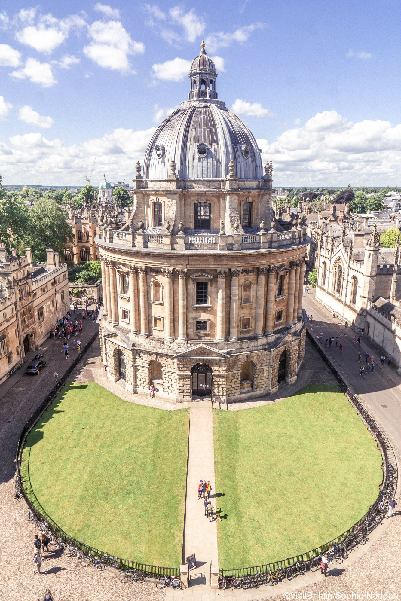
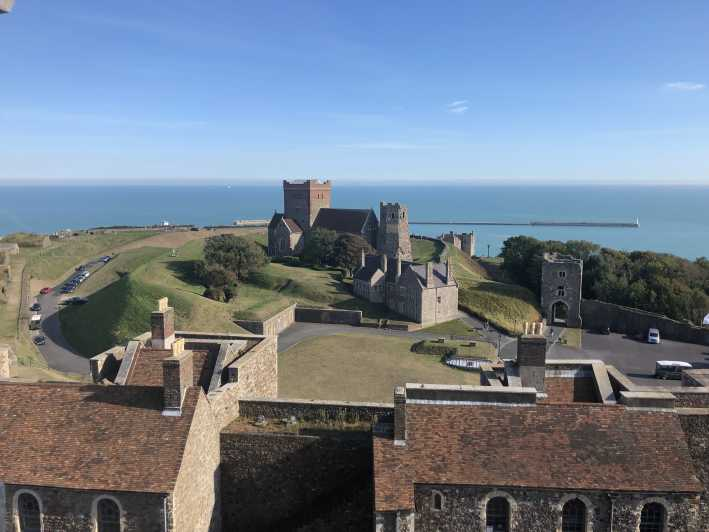

Para conocer

Oxford, Stratford upon Avon y los Costwolds:
Stratford-upon-Avon es un municipio situado en Warwickshire al sur de Birmingham, Inglaterra, Reino Unido. Su población era de 23 676 habitantes en 2001.
Su principal atracción turística es todo lo relacionado con la casa de William Shakespeare y sus propiedades.

Canterburry y Dove:
Hogar de la Catedral de Canterbury, declarada Patrimonio de la Humanidad por la UNESCO, y de los icónicos
Acantilados Blancos de Dover, las ciudades de Canterbury y Dover son excursiones ideales desde Londres. A continuación, se muestran algunas formas de optimizar
su tiempo en la esquina sureste de Inglaterra.